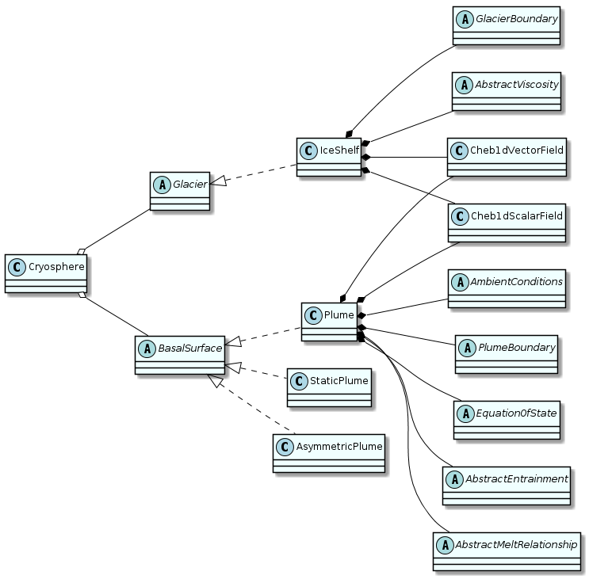
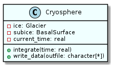
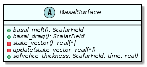
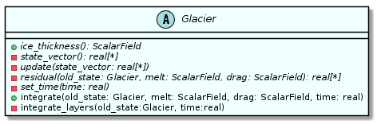
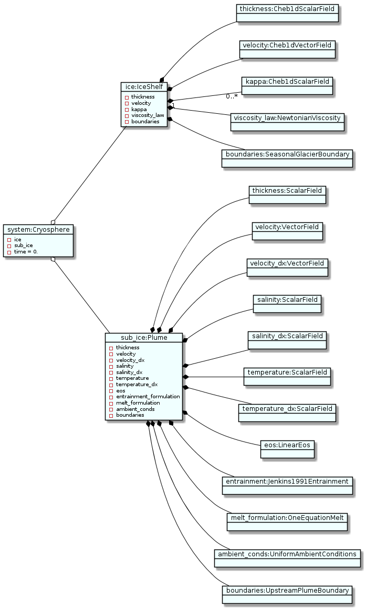
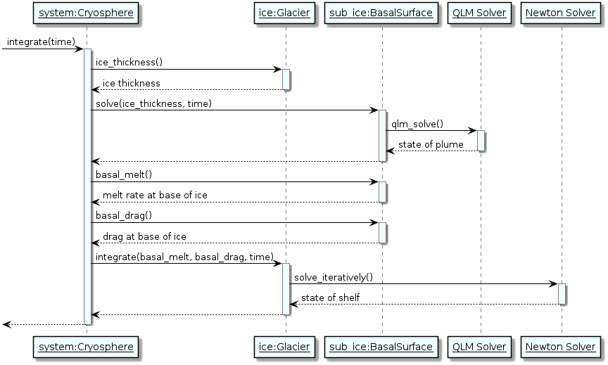

ISOFT uses a large number of derived types (equivalent to classes in other object oriented languages) in order to model the full glacial system. The system as a whole is contained within a [[cryosphere(type]] type, with methods for saving/loading data to/from the disk as HDF5 files and for integrating forward in time. The cryosphere contains objects of abstract classes basal_surface and glacier, the latter representing a glacier and the former representing whatever is underneath it. Objects of these types have their own methods for reading and writing data, integration, and accessing useful information. Both are general enough to allow ISOFT to model either floating or grounded ice. Below are class diagrams showing the inheritance/encapsulation relationships between different derived types, as well as methods for the cryosphere, glacier, and basal_surface types.




The only concrete existing implementation of the glacier class is the ice_shelf type. As its name suggests, this models the behaviour of an ice shelf. While the implementation of the continuity equation is agnostic towards whether the model is 1-D or 2-D, at present the ice momentum equation is explicitly 1-D. Ideally this will be fixed in the future. The ice_shelf type may optionally feature a Lagrangian tracer, assumed to indicate the age of the ice as would be measured from internal reflectors. There is stub for a grounded ice_sheet type, but its methods have not been implemented.
A few implementations of the basal_surface class are available. The most commonly used of these is the plume type, modelling the 1-D subglacial plume. In principle this can model a second velocity component, but such a model is physically unstable. There is also the static_plume type, which does not evolve from the state with which it is initialised or has loaded from saved data. This is useful if a simulation is to be performed with a fixed melt rate. The asym_plume provides an implementation of a horizontally-integrated model. Various parameters describing the transverse profile of this plume are provided through the associated plume_shape derived type. Finally, a ground type exists as a stub, which could be fully implemented in future to provide a basal surface with frictional information for a grounded ice sheet.

All of these implementations contain field types (described in the next section) for each variable, describing their state. They also contain objects representing the boundary conditions and choices of parameterisations, described in more detail in the Parameterisations and Boundary Conditions section. This is illustrated in the preceding figure, showing the state of the objects at the beginning of a representative simulation. The cryosphere class is a Puppeteer pattern which, as described by Rouson, Xia, and Xu (2014), coordinates interactions between various other classes (glacier and basal_surface, in this case) without them needing to directly interact with each other. Thus, interdependencies between different modules of code are simplified. For each time-step, the following sequence of steps occurs, as illustrated in the UML sequence diagram which follows:
The cryosphere first gets the ice thickness from the glacier.
This information is sent to the basal_surface object, with which it can solve for its state at the current time using the QLM solver.
The cryosphere gets the current melt rate and/or friction parameters from the basal_surface.
This information is sent to the glacier object, where it is used to integrate its state forward in time with NITSOL.
